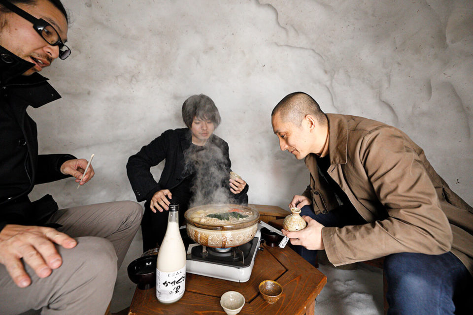
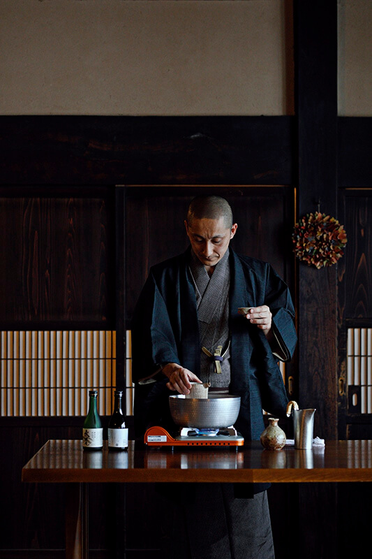
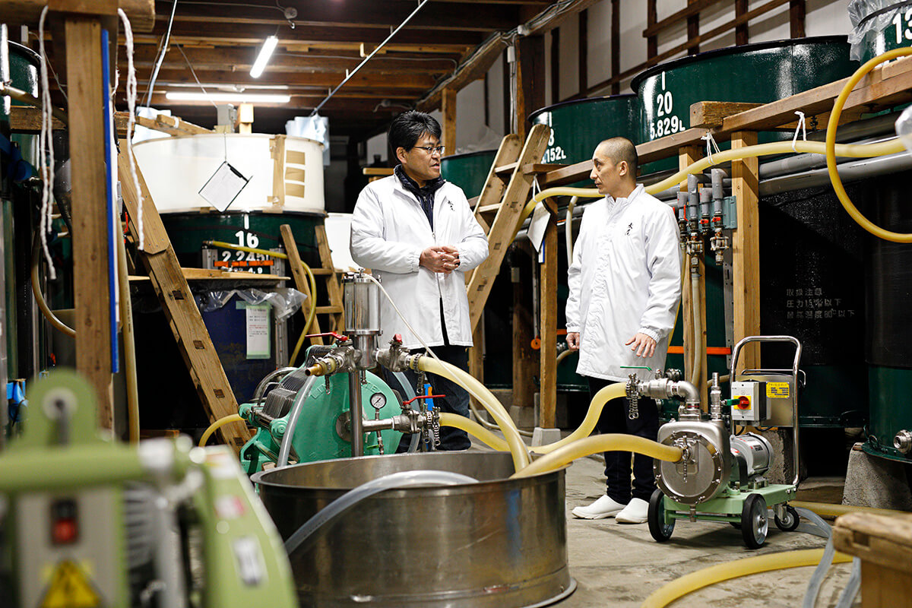
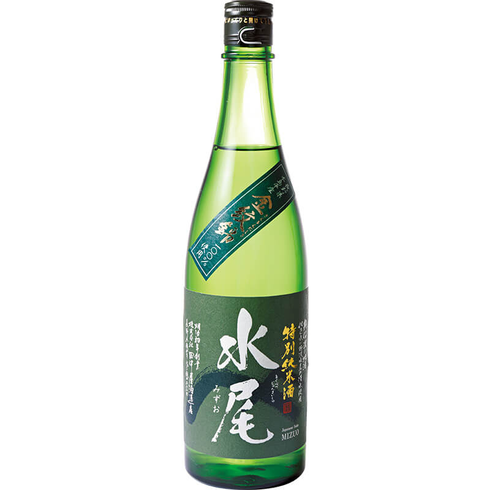
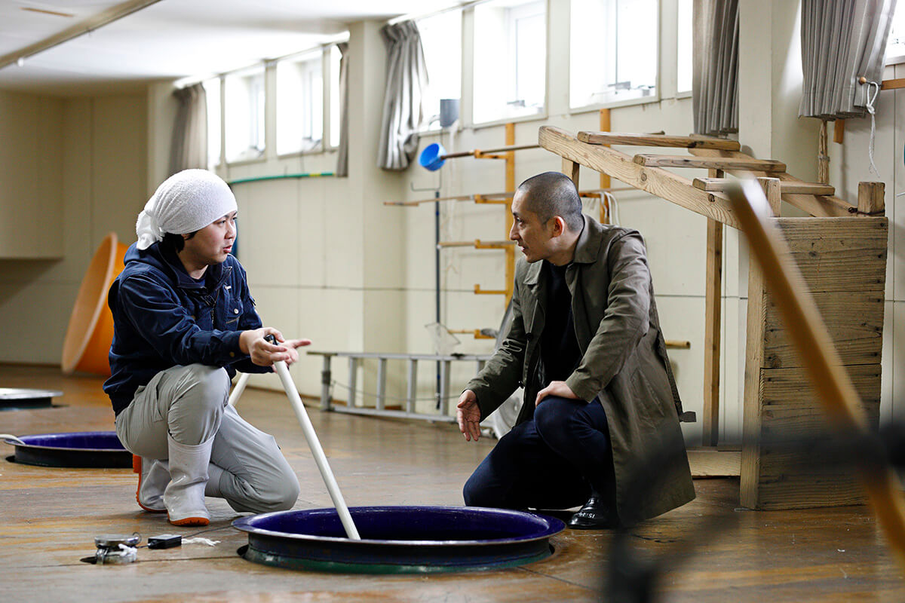
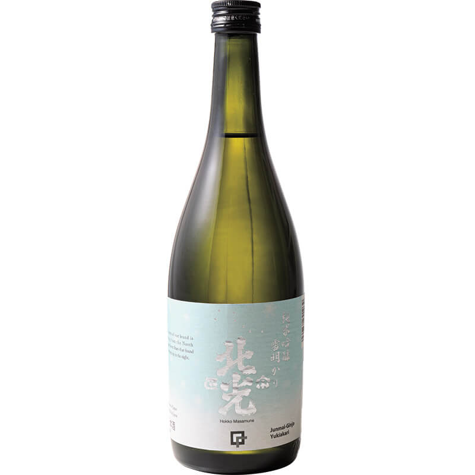

Префектура Нагано · Иияма · сакэ
Сакэ Ииямы: две сакэварни на севере Нагано, которые пережили тайфун

Иияма, самый северный город префектуры Нагано, славится снегом, мягкой водой и рисом, а значит, и сакэ. В октябре 2019 года город сильно пострадал от тайфуна, и в начале 2020 года мастер подогретого сакэ из Гонконга приехал сюда в две местные сакэварни.
Гость
Мастер подогретого сакэ
В октябре 2019 года на Японию обрушился мощный тайфун номер 19. Сильно пострадала и Иияма, самый северный город префектуры Нагано, у границы с Ниигатой. Для поддержки пострадавших мест запустили проект, который рассказывает о местных марках, и в Иияму пригласили Синъя Госиму.
Синъя Госима называет себя «канцукэ-си», мастером подогрева сакэ. Он шеф и владелец ресторана GODENYA в Гонконге, где к каждому из восьми блюд дегустационного меню подают свой сорт сакэ. Его тема звучит так: сделать сакэ напитком к столу для всего мира. С семинарами и дегустациями подогретого сакэ он ездит по разным странам.

«В сакэ много умами, и от подогрева его становится ещё больше. Подогретое сакэ раскрывает вкус еды и делает послевкусие длиннее. В этом его главная сила»
Синъя Госима
«Когда я услышал о том, что случилось, мне было очень больно. Я хотел через своё дело, подогретое сакэ, найти новое в местных сакэ и местной еде Ииямы»
Синъя Госима
Мидзуо
«Танакая сюдзотэн»: вода с горы Мидзуо
Первой остановкой стала сакэварня «Танакая сюдзотэн» в центре города. Её основали в 1873 году, и по данным 2020 года ею руководит шестое поколение семьи. Глава сакэварни провёл гостя по цехам и рассказал, что пережил осенью 2019 года.

«Утром я пришёл, а в сакэварне стоит грязная вода, около метра. Слов не было. Пострадало больше ста единиц оборудования. Это было настоящее отчаяние»
глава «Танакая сюдзотэн»
Одно время он был готов вовсе бросить варить сакэ. Но со всей страны приехали около 300 добровольцев, в основном сотрудники магазинов сакэ. Ремонт пошёл быстро, и к весне 2020 года работа наконец вернулась в обычный ритм.
Главная марка сакэварни «Мидзуо» названа по горе Мидзуо. Мягкую воду для неё берут из источника у подножия горы, а рис выращивают по договору на полях в пределах пяти километров от сакэварни. Глава ищет вкус, в котором чувствуется, почему это сакэ сварено именно здесь. Марку он запустил в 1992 году. Даже простое столовое сакэ здесь варят по той же технологии, что и дайгиндзё, и раскрывают характер двух рисовых сортов, выведенных в префектуре Нагано: «Хитогокоти» и «Кинмоннисики».

«Вкус мягкий и чистый, но в конце остаётся ясное умами. Здесь умеют использовать даже горчинку и терпкость самого риса»
Синъя Госима
По данным 2020 года, сакэварня производит около 90 000 литров сакэ в год.
«Танакая сюдзотэн»
- Адрес
- префектура Нагано, Иияма, Оаза-Иияма, Сакана-мати, 2227
- Телефон
- +81 269-62-2057
- Сайт
- mizuo.co.jp
Хокко Масамунэ
«Кадогути сюдзотэн»: самая северная сакэварня Нагано
Вторая сакэварня, «Кадогути сюдзотэн», самая северная в префектуре. Её тодзи, главный мастер, которому предстояло стать главой сакэварни в шестом поколении, после тайфуна отправлял соседям из «Танакая сюдзотэн» оборудование и людей и сам ездил помогать в пострадавшие районы. Разрушения он видел своими глазами.

Привязанность к родным местам видна и во вкусе марки «Хокко Масамунэ». Сакэварня многое меняет, но характер сакэ остаётся прежним. Раньше почти всё «Хокко Масамунэ» выпивали в округе. Будущий глава улучшил качество, не отказавшись от традиционного сухого и резкого стиля, и начал продавать сакэ за пределами префектуры и за границей. Варят его в основном из «Хитогокоти» и «Кинмоннисики» на мягкой воде с горы Набэкура.
«Сварить сакэ с ярким ароматом и сладостью, которое нравится в больших городах, мы можем. Но нам незачем это делать. Мы хотим варить сакэ, в котором чувствуются корни местного сакэ, то, что здешние люди пьют с гордостью»
тодзи «Кадогути сюдзотэн»
Синъя Госиму восхитило, что сакэварня бережёт свою основу и при этом развивается. Зима 2019/20 выдалась тёплой и малоснежной, и в «Кадогути сюдзотэн» признались, что работать было трудно. В этом гость увидел суть здешнего сакэ: оно живёт вместе с природой.

Сакэварня основана в 1869 году и, по данным 2020 года, производит около 100 000 литров сакэ в год (примерно 55 000 больших бутылок).
«Кадогути сюдзотэн»
- Адрес
- префектура Нагано, Иияма, Оаза-Цунэсато, 1147
- Телефон
- +81 269-65-2006
- Сайт
- kadoguchi.jp
Синъя Госима
Почему за этим сакэ надо ехать
Больше всего Синъя Госиму поразило, как любят эти сакэварни дома: обе продают 90% сакэ в самой префектуре Нагано. И ещё то, как хорошо их сакэ сочетается с местными продуктами и домашней кухней.
«Выпадает снег, из земли выходит вода, и от неё становятся вкуснее сакэ, рис и овощи. Всё связано здешней природой, и такой культуры больше нет нигде в мире. Поэтому почувствовать её можно, только приехав сюда. Сочетания, которые я предложил, лишь один из способов. Буду рад, если и местные жители откроют своё сакэ заново»
Синъя Госима
Фото: Норихито Судзуки.